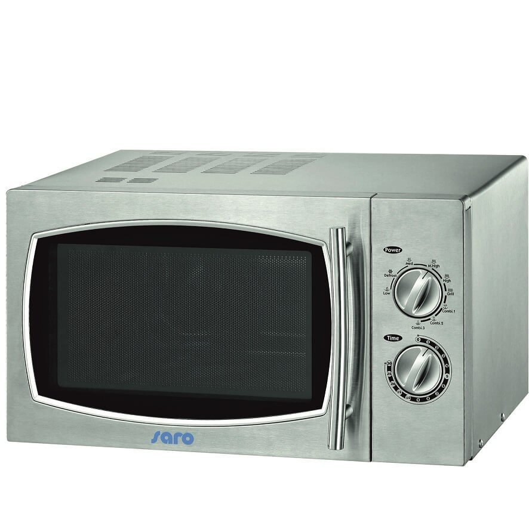
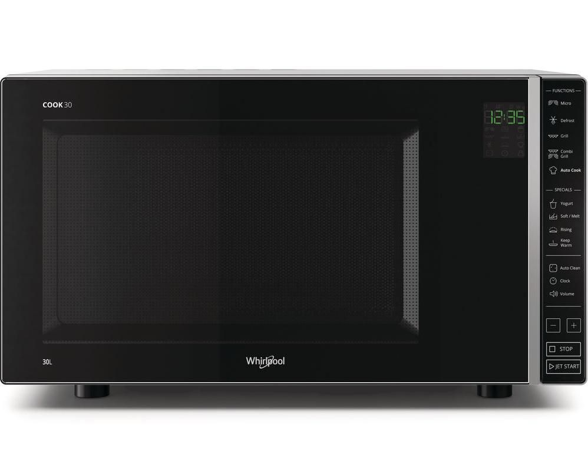
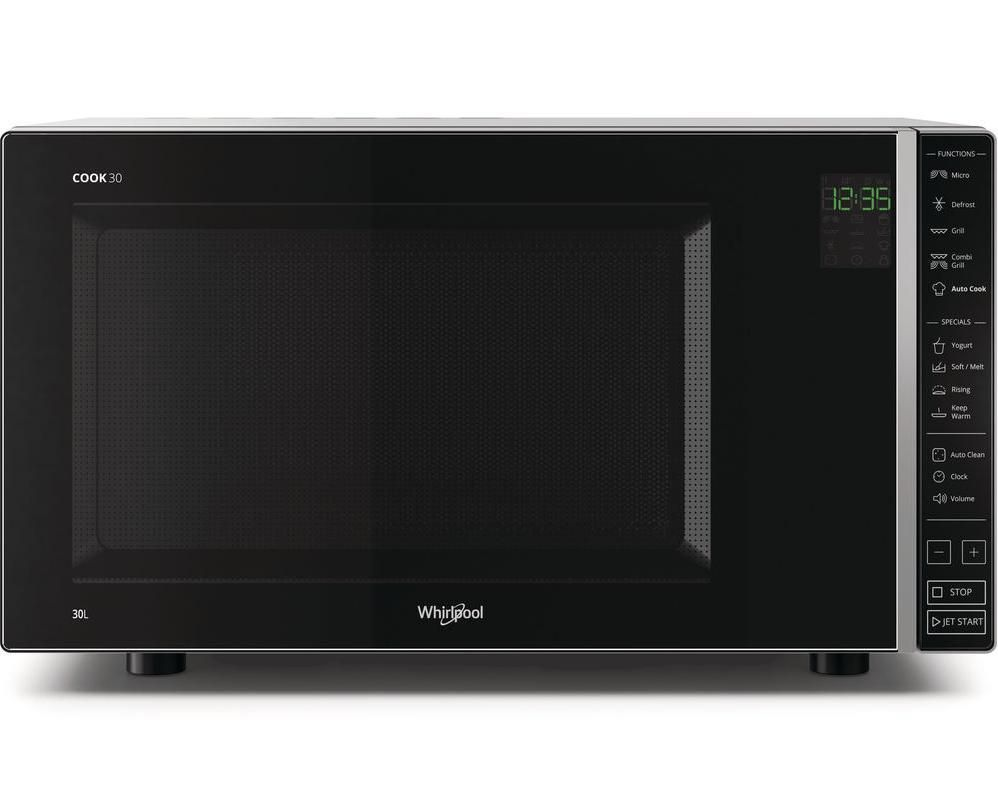

Mikrobangų krosnelės | Electrolux
2020.10.30 02:53

Rasti parduotuvę Prisijungti Menu Produktai Atgal
Produktai
Maisto gaminimas
Orkaitės Kaitlentės Garų rinktuvai Mikrobangų krosnelės Viryklės Kompaktiškų įmontuojamų prietaisų asortimentas Pašildymo stalčiai Vakuumavimo stalčiai Gaminimas ir šaldymas PriedaiIndų plovimas
Indaplovės PriedaiŠaldymas
Šaldytuvai Šaldytuvai su šaldikliu Šaldikliai PriedaiDrabužių priežiūra
Skalbyklės Džiovyklės Skalbyklės su džiovinimu Lygintuvai Garų lyginimo sistemos PriedaiDulkių siurbliai
Belaidžiai dulkių siurbliai Dulkių siurbliai robotai Dulkių siurbliai Dulkių siurbliai be maišelio Langų valytuvai PriedaiMažieji virtuvės prietaisai
Kokteilinės Trintuvai Virduliai Skrudintuvai Virtuvės kombainai Plaktuvai Kavos virimo aparatai PriedaiPriedai
Maisto gaminimo priedai Indaplovių priedai Šaldymo priedai Drabužių priežiūros priedai Dulkių siurblių priedai Priedai Įkvėpimas AtgalĮkvėpimas
Suteikite gyvenimui skonio
Šiek tiek kūrybiškumo keičia viską.
Nepriekaištinga priežiūra
Nešiokite savo mėgstamiausius drabužius ilgiau.
Maloni aura jūsų namuose
Suteikite savo namams harmonijos ir gyvybės iš gamtos.
Pagalba Rasti parduotuvę Prisijungti PaieškaMikrobangų krosnelės
Ruoškite maistą mikrobangų krosnelėje su grilio funkcija. Arba pasišildykite joje atšalusį maistą. Daugelis „Electrolux“ kompaktiškų įmontuojamų orkaičių taip pat turi mikrobangų funkciją.
Pasirinkite kategoriją
Mikrobangų krosnelėMikrobangų krosnelė yra sinonimas žodžiui „greitai“. Greitai pašildyti, greitai išvirti, greitai atšildyti. Greitai, todėl turite daugiau laiko įdomesnėms veikloms. Mikrobangų krosnelė bus naudinga pagalbininkė kiekvienai šeimai – ir skubantiems jauniems specialistams, ir šeimoms su vaikais, ir vieno asmens namų ūkiams, kai dažnai reikia pašildyti pirmiau paruoštą patiekalą. Tačiau gera mikrobangų krosnelė galės padaryti daug daugiau nei tik pašildyti jau paruoštą valgį!
Kuo ypatinga mikrobangų krosnelė
Šiltas maistas bet kuriuo metu – ekonomiškiau gaminti daugiau maisto vienu metu. Pašildytas mikrobangų krosnelėje jis liks toks pat skanus ir šviežias! Šviežias maistas per kelias minutes – naujausios mikrobangų krosnelės jau seniai nebėra tik maisto šildymo priemonės, jų funkcijų pasirinkimas yra daug platesnis. Mikrobangų krosnelės taip pat gali būti su kepimo ant grotelių funkcija, todėl galima išbandyti daug naujų receptų. Atšildyti ingredientai per kelias minutes – jei norite ruošti patiekalą iš šviežios mėsos, tačiau mėsa vis dar užšaldyta,mikrobangų krosnelėtai padarys per gana trumpą laiką. Ruoškite puikius desertus – daug desertų receptų reikalauja lydyto sviesto, šokolado ar kitų šiltų ingredientų. Mikrobangų krosnelė padės lengvai atlikti šią užduotį – reikiamą konsistenciją ir temperatūrą gausite per kelias akimirkas. Sužinokite daugiauKaip išsirinkti mokrobangų krosnelę
Visiškai visos mikrobangų krosnelės leidžia šildyti, išlydyti, atšildyti ir kaitinti. Taigi kaip iš plataus asortimento išsirinkti sau tinkamiausią? Apsvarstykite savo poreikius ir išsirinkite iš siūlomų variantų.
Montavimo tipas
Yra dviejų tipų mikrobangų krosnelės: laisvai pastatomos ir įmontuojamos. Laisvai pastatoma mikrobangų krosnelė yra suprojektuota taip, kad ją būtų galima patalpinti bet kokioje patogioje vietoje, o įmontuojama mikrobangų krosnelė yra įmontuojama specialiai jai numatytoje ir pritaikytoje vietoje, todėl sklandžiai integruojasi į bendrą virtuvės įrangą ir papildo jos turinį.
Spalva
Kad mikrobangų krosnelė gerai atrodytų su kitais virtuvės prietaisais, išsirinkite spalvą iš galimo diapazono. Populiariausios spalvos yra juoda arba nerūdijančio plieno, tačiau taip pat yra baltos ir sidabro spalvos mikrobangų krosnelės.
Išmaniosios funkcijos ir jutiklinis ekranas
Išsirinkite sau tinkamiausią prietaisą – jei Jums patinka spaudinėti mygtukus, rinkitės krosnelę su mygtukais. Jei pirmenybę teikiate jutikliniams ekranams, kurį galima nuvalyti vienu mostelėjimu, rinkitės modelį su jutikliniu ekranu ir išmaniosiomis funkcijomis.
Kepimo ant grotelių funkcija
Jei norite, kad mikrobangų krosnelė suteiktų daugiau patiekalų ruošimo galimybių, rinkitės krosnelę su grilio funkcija, kuri leis paruošti daug daugiau patiekalų.
Maisto gaminimas Mikrobangų krosnelės Į puslapio viršųKlientų aptarnavimas
Susisiekite su mumis Palikite atsiliepimą Socialiniai tinklai Pagalba Užregistruokite gaminį Atsisiųsti vadovus Atsisiųsti brošiūras DUK Rasti techninio aptarnavimo centrą GarantijaApie Electrolux
Electrolux grupė Spauda ir naujienos Finansinė informacija Aplinka KarjeraElectrolux Lietuva
Naujienos ir įvykiai Receptai Akcijos Partneriai Apdovanojimai E-LucidAtraskite
Garines orkaites Indukcines kaitlentes Šaldytuvus su šaldikliu Garų rinktuvus Indaploves Skalbykles Džiovykles Skalbykles su džiovinimu Dulkių siurblius TERMINAI IR SĄLYGOS Data Privacy Statement„Electrolux“ svetainės optimizavimui ir reklamos bei rinkodaros tikslams naudoja slapukus ir įvairias stebėjimo technologijas. Jei sutinkate, anoniminiai slapukai naudojami siekiant gerinti mūsų svetainę ir paslaugas. Taip pat naudojamas trečiųjų šalių turinys. Kai kuria informacija, užtikrindami saugumą, galime dalytis su patikimais partneriais. Skiltyje Duomenų privatumo patvirtinimas galite sužinoti daugiau ir bet kada pakeisti nuomonę.
„Electrolux“ svetainės optimizavimui ir reklamos bei rinkodaros tikslams naudoja slapukus ir įvairias stebėjimo technologijas. Jei sutinkate, anoniminiai slapukai naudojami siekiant gerinti mūsų svetainę ir paslaugas. Taip pat naudojamas trečiųjų šalių turinys. Kai kuria informacija, užtikrindami saugumą, galime dalytis su patikimais partneriais. Skiltyje Duomenų privatumo patvirtinimas galite sužinoti daugiau ir bet kada pakeisti nuomonę.
Back Sutinku Nesutinku
- Mikrobangų krosnelė
- MIKROBANGŲ KROSNELĖS – ĮVAIRŪS MODELIAI ||1A.LT
- Mikrobangų krosnelė SAMSUNG ME87M/BAL - Topocentras
- Mikrobangų krosnelės | DAEWOO Electronics
- Mikrobangų krosnelė | Pastatomos ir įmontuojamos krosnelės ...
- Mikrobangų krosnelės - Panasonic Lietuva
- MIKROBANGŲ KROSNELĖS virš 380 modelių Žema kaina | Varle.lt
- Mikrobangų krosnelės | Mikrobangų krosnelė su akcija
- Naudojimo instrukcija Mikrobangų krosnelė
- Mikrobangų krosnelė: plastikas arba įmontuotas mikrobangų ...
- Mikrobangų krosnelė
Mikrobangų krosnelėje su šiuo papildomu priedu galite sterilizuoti patiekalus (pavyzdžiui, skardines konservavimui ar kūdikių butelius). Kai kuriuose modeliuose, naudojant dvigubą katilą, mikrobangų krosnelė papildomai atlieka darbo kameros valymą garais. Dvigubą katilą galima plauti indaplovėje.
- MIKROBANGŲ KROSNELĖS – ĮVAIRŪS MODELIAI ||1A.LT
Mikrobangų krosnelė – virtuvės prietaisas, skirtas greitai pašildyti ar paruošti maistą. Mikrobangų krosnelės gali būti pastatomos arba įmontuojamos į baldus. Pastatomos mikrobangų krosnelės yra pigesnės ir lengvai perkeliamos į kitą vietą, o įmontuojamos, nors ir brangesnės, atrodo itin estetiškai, pasižymi didesniu ...
- Mikrobangų krosnelė SAMSUNG ME87M/BAL - Topocentras
Mikrobangų krosnelė yra ne tik maisto pašildymo prietaisas. Ji leidžia greitai atitirpinti produktus bei pagaminti įvairių patiekalų. Pasižvalgykite!
- Mikrobangų krosnelės | DAEWOO Electronics
Mikrobangų krosnelė LG Microwave Oven MS2535GIB 25 L, Touch control, 1000 W, Juodas, 147, 99 € 2-3 d. d. (10) Gamintojas: LG
- Mikrobangų krosnelė | Pastatomos ir įmontuojamos krosnelės ...
naudoti mikrobangų krosnelėse. 3. Nenaudokite šios mikrobangų krosnelės džiovinti laikraščius, drabužius ar kitas medžiagas. Jos gali užsidegti. 4. Kai krosnelė yra nenaudojama, nelaikykite jokių daiktų krosnelės viduje, nes ją galite netyčia įjungti. 5. Prietaiso negalima naudoti mikrobangų ar mišriu režimu, kai
- Mikrobangų krosnelės - Panasonic Lietuva
Mikrobangų krosnelė Electrolux EMM 21000 W. ELECTROLUX mikrobangų krosnelės. nuo 71.00 ...
- MIKROBANGŲ KROSNELĖS virš 380 modelių Žema kaina | Varle.lt
Mikrobangų krosnelė gali būti naudojama įvairioms funkcijoms – paruošti maistą, atitirpinti užšaldytus maisto produktus, greitai pašildyti ir t. t. Siekiant pasirinkti tinkamiausią prietaiso variantą, pirmiausia reikia susipažinti su jo parametrais.
- Mikrobangų krosnelės | Mikrobangų krosnelė su akcija
Mikrobangų krosnelė bus naudinga pagalbininkė kiekvienai šeimai – ir skubantiems jauniems specialistams, ir šeimoms su vaikais, ir vieno asmens namų ūkiams, kai dažnai reikia pašildyti pirmiau paruoštą patiekalą. Tačiau gera mikrobangų krosnelė galės padaryti daug daugiau nei tik pašildyti jau paruoštą valgį!
- Naudojimo instrukcija Mikrobangų krosnelė
Mikrobangų krosnelė - tai elektrinis buitinis prietaisas, mikrobangų principu šildantis maistą. Viduje įmontuotas magnetronas pradeda gaminti mikrobangas vos tik įjungus šį prietaisą į elektros lizdą. Šios bangos mikrobangų krosnelės viduje sklinda įvairiomis kryptimis, todėl ir maistas sušyla tolygiai.
- Mikrobangų krosnelė: plastikas arba įmontuotas mikrobangų ...
DAEWOO Electronics
Mikrobangų krosnelėje su šiuo papildomu priedu galite sterilizuoti patiekalus (pavyzdžiui, skardines konservavimui ar kūdikių butelius). Kai kuriuose modeliuose, naudojant dvigubą katilą, mikrobangų krosnelė papildomai atlieka darbo kameros valymą garais. Dvigubą katilą galima plauti indaplovėje.
Mikrobangų krosnelė – virtuvės prietaisas, skirtas greitai pašildyti ar paruošti maistą. Mikrobangų krosnelės gali būti pastatomos arba įmontuojamos į baldus. Pastatomos mikrobangų krosnelės yra pigesnės ir lengvai perkeliamos į kitą vietą, o įmontuojamos, nors ir brangesnės, atrodo itin estetiškai, pasižymi didesniu ...
Mikrobangų krosnelė yra ne tik maisto pašildymo prietaisas. Ji leidžia greitai atitirpinti produktus bei pagaminti įvairių patiekalų. Pasižvalgykite!
Mikrobangų krosnelė LG Microwave Oven MS2535GIB 25 L, Touch control, 1000 W, Juodas, 147, 99 € 2-3 d. d. (10) Gamintojas: LG
naudoti mikrobangų krosnelėse. 3. Nenaudokite šios mikrobangų krosnelės džiovinti laikraščius, drabužius ar kitas medžiagas. Jos gali užsidegti. 4. Kai krosnelė yra nenaudojama, nelaikykite jokių daiktų krosnelės viduje, nes ją galite netyčia įjungti. 5. Prietaiso negalima naudoti mikrobangų ar mišriu režimu, kai
Mikrobangų krosnelė Electrolux EMM 21000 W. ELECTROLUX mikrobangų krosnelės. nuo 71.00 ...
Mikrobangų krosnelė gali būti naudojama įvairioms funkcijoms – paruošti maistą, atitirpinti užšaldytus maisto produktus, greitai pašildyti ir t. t. Siekiant pasirinkti tinkamiausią prietaiso variantą, pirmiausia reikia susipažinti su jo parametrais.
Mikrobangų krosnelė bus naudinga pagalbininkė kiekvienai šeimai – ir skubantiems jauniems specialistams, ir šeimoms su vaikais, ir vieno asmens namų ūkiams, kai dažnai reikia pašildyti pirmiau paruoštą patiekalą. Tačiau gera mikrobangų krosnelė galės padaryti daug daugiau nei tik pašildyti jau paruoštą valgį!
Mikrobangų krosnelė - tai elektrinis buitinis prietaisas, mikrobangų principu šildantis maistą. Viduje įmontuotas magnetronas pradeda gaminti mikrobangas vos tik įjungus šį prietaisą į elektros lizdą. Šios bangos mikrobangų krosnelės viduje sklinda įvairiomis kryptimis, todėl ir maistas sušyla tolygiai.
DAEWOO Electronics

 
